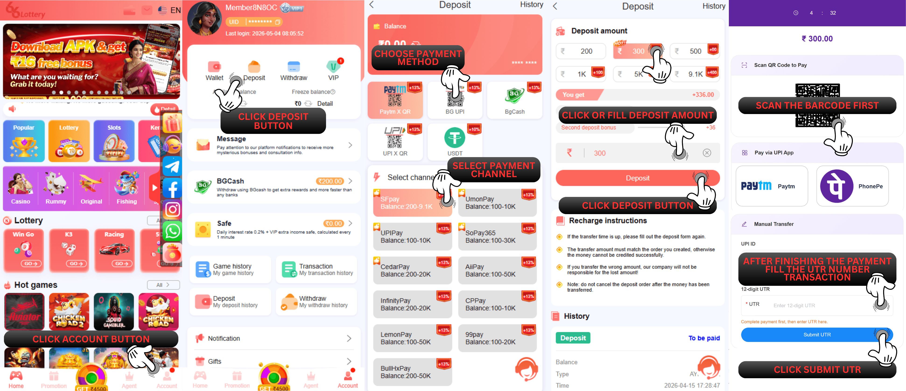
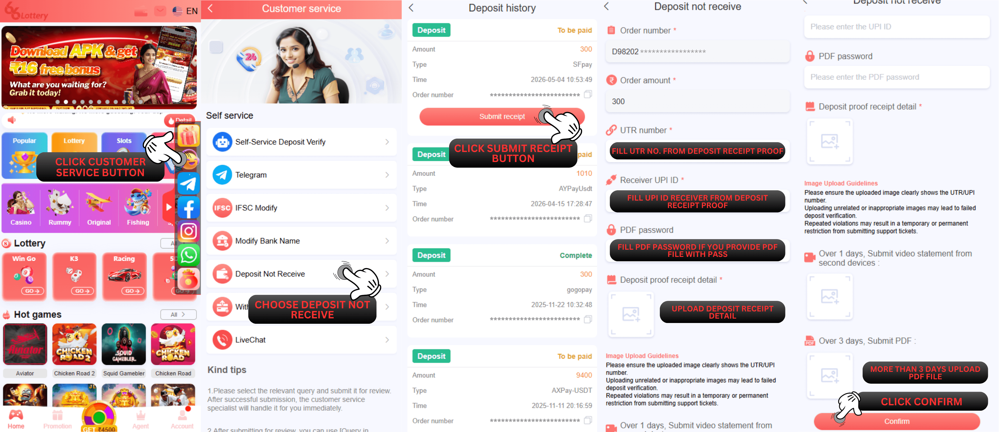

Deposit Not Arrived
Q : Why my deposit amount still not arrived yet after I complete the payment?
A : Sometimes there have a problem on the bank overflow order that will affected to your deposit order will be pending or delay. If you encounter the problem of your deposit order is late to arrived into your ID account, we highly recommend all our member for resubmit a new deposit order by the following step below :
1.Go to the 【Deposit】menu
2.Create a new deposit order
3.Ensure that you put the deposit amount that same as the previous order
4.Ensure that you have selected the same payment method and third party as the previous order
5.Verify and enter the correct UTR number as your previous transaction that you have done. please double-check that the payment UTR number is accurate and fill it at the UTR field which will be displayed after you submit your new order correctly
After you follow all these steps, you should be able to completed for resubmit your delayed deposit order and our system will follow up on the transaction or the deposit payment that you made and we ensure that it will be helpful for speed up the arrival of your deposit amount into your ID account.

After you follow all these steps, you should be able to completed for resubmit your delayed deposit order and our system will follow up on the transaction or the deposit payment that you made and we ensure that it will be helpful for speed up the arrival of your deposit amount into your ID account.
Q : Why hasn't my deposit arrived yet even I already resubmit the deposit order for several times?
A : If your 66 Lottery account deposit is not arrived yet, you need to submit it at the 66 Lottery Self-Service Center and then follow this step :
1.Select the question "Deposit not received"
2.Click "Submit UTR" to the deposit order that you already paid
3.Fill in the UTR number
4.Fill in the recipient UPI ID
5.Fill in the PDF password (if the PDF file contain password)
6.Upload a photo of the deposit receipt (clear and detail)
7.Upload a video of the bank statement (if not received more than 1 day)
8.Upload a PDF bank statement (if not received more than 3 days)
9.Click "Confirm" to submit issue
Note: You need to ensure that all the data you provide is correct, clear and detailed so that our deposit department will help you to check faster.
Due to bank reasons, many UTR will be delayed in arrival. If the self-service center replies that your recharge is being queued, it is recommended that you consult your payment bank to understand the UTR status! You don't need to submit every time to reply to this content. Our recharge specialists will help you consult with the bank for follow-up! When it arrives it will be added to your account!
Note: You need to ensure that all the data you provide is correct, clear and detailed so that our deposit department will help you to check faster.
Due to bank reasons, many UTR will be delayed in arrival. If the self-service center replies that your recharge is being queued, it is recommended that you consult your payment bank to understand the UTR status! You don't need to submit every time to reply to this content. Our recharge specialists will help you consult with the bank for follow-up! When it arrives it will be added to your account!

Q : I'm not really understand about the UTR number and Receiver UPI ID where i can find that?
A : You can find it on the bank / wallet apps you using :
You open the bank / wallet apps you use for transfer deposit
Search on the history transaction / inbox
Press the transaction you do to show the detail transfer
You can check also the photo below to see the explanation to check the deposit receipt proof :
Deposit amount
Receiver UPI ID
UTR number
Time and date transaction
This 4 step is need to be show clear and detail so our deposit department can help to check faster.

You can check also the photo below to see the explanation to check the deposit receipt proof :
This 4 step is need to be show clear and detail so our deposit department can help to check faster.